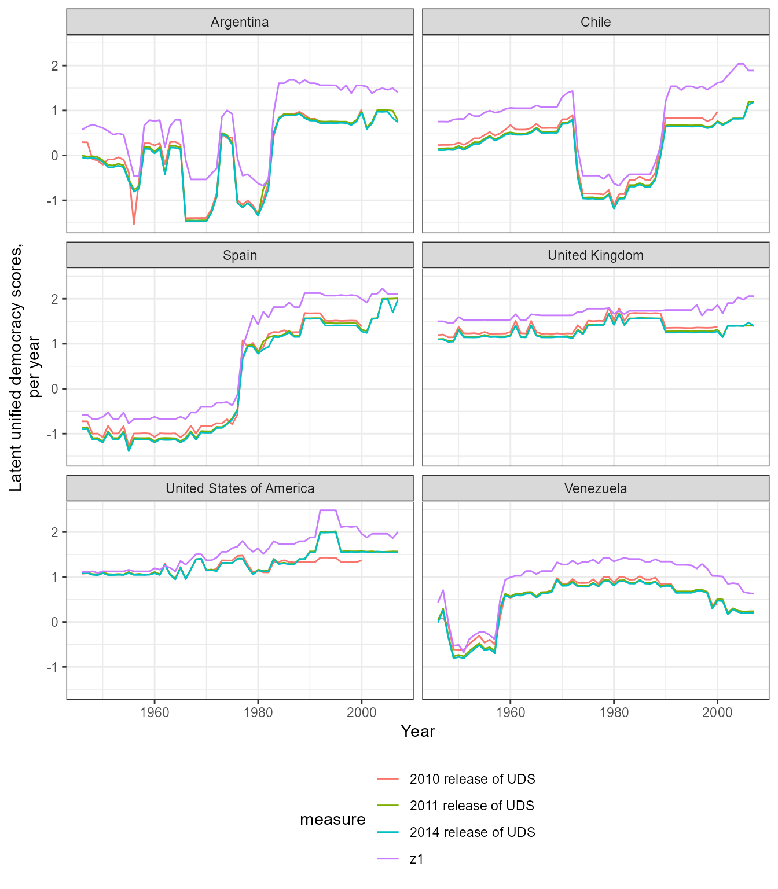
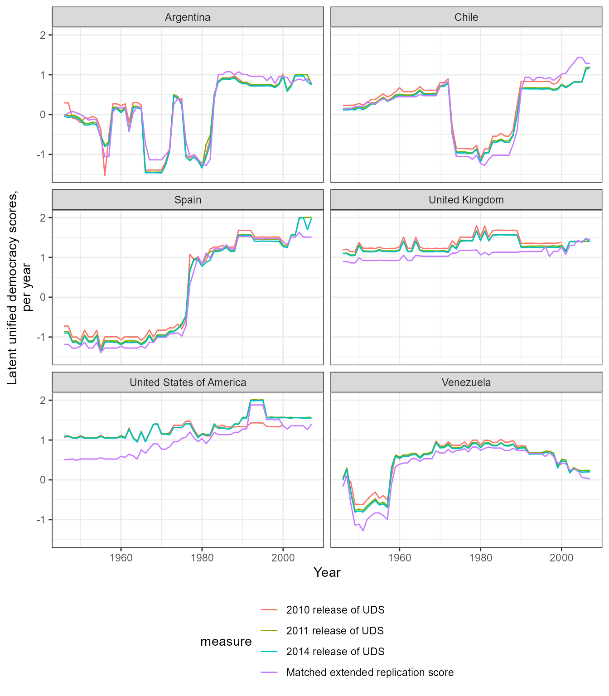
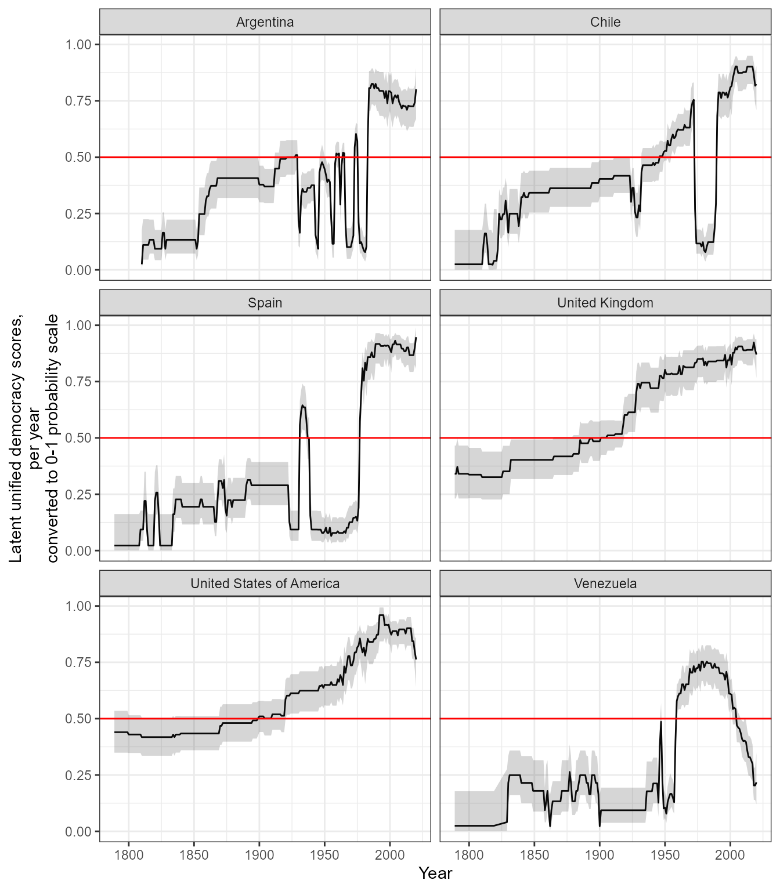
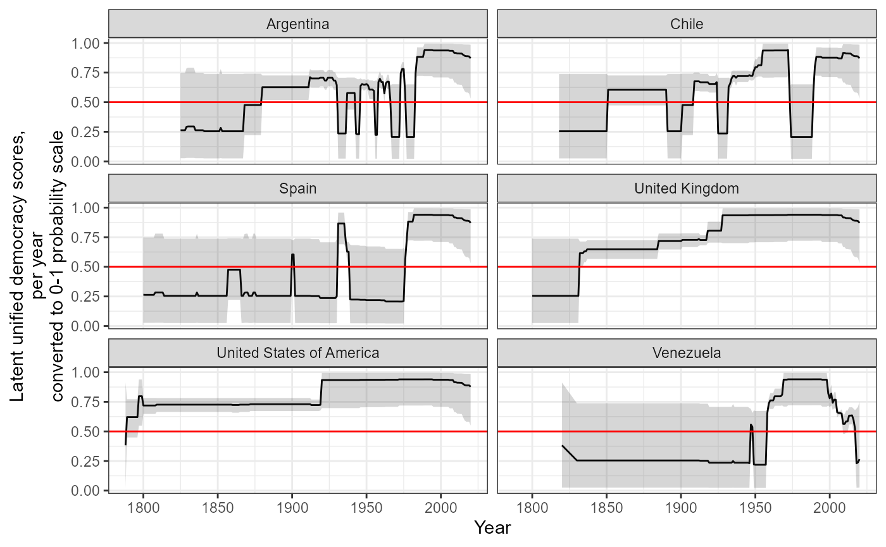
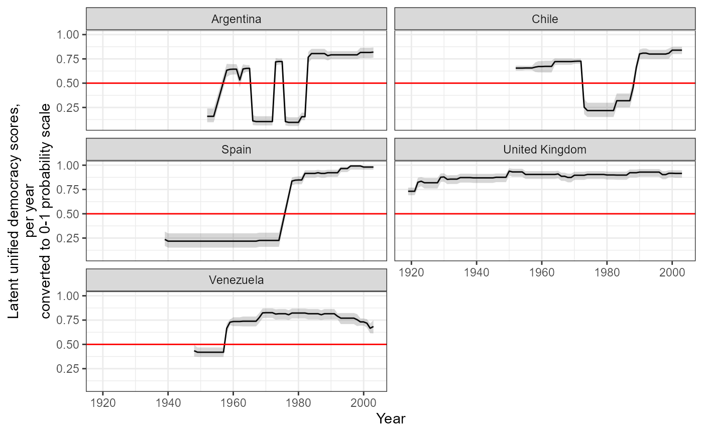
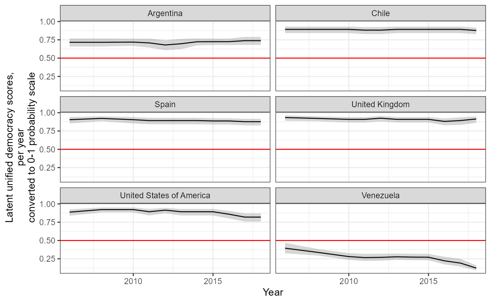
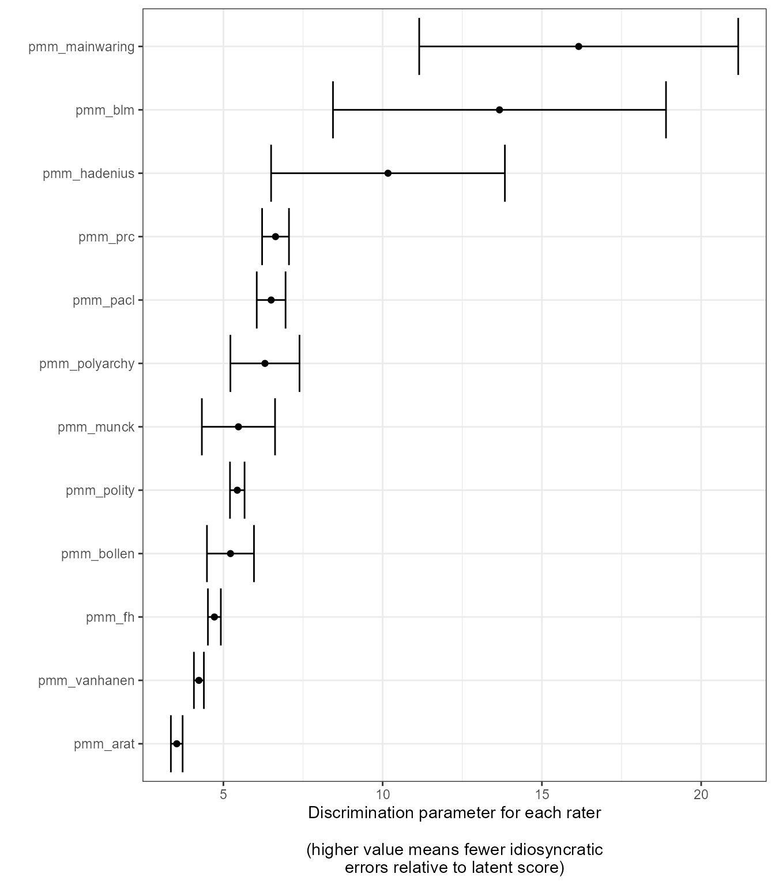

Replicating and Extending the UD scores of Pemstein, Meserve, and Melton
Xavier Marquez
2021-05-31
Source:vignettes/articles/Replicating_and_extending_the_UD_scores.Rmd
Replicating_and_extending_the_UD_scores.RmdWe can use this package to replicate and extend the Unified Democracy Scores of Pemstein, Meserve, and Melton (2010) (which are no longer being updated or maintained), and in general to calculate latent variable indexes of democracy.1 This article is a modified version of the vignette for my package QuickUDS, which I am no longer actively maintaining; I am slowly migrating the functions in that package to this package to avoid having to update two different data sets of democracy measures.
You will need the package mirt (Chalmers 2012), which can quickly compute full-information factor analyses.
The basic procedure for replicating or extending the UD scores is very simple.
- Generate a dataset of democracy scores with a call to
generate_democracy_scores_dataset(); - Prepare the democracy data using the convenience function
prepare_democracy_data(); - Fit a simple
mirtmodel; - Extract the calculated scores with a call to
democracy_scores()or tomirt::fscores().
Preparing your democracy measures
The first step is to prepare the democracy measures for use with mirt. I focus first on replicating the 2011 release of the UDS, and then explain how to extend and augment these scores.
In order to replicate the original UD scores, we need to use PMM’s replication dataset (Pemstein, Meserve, and Melton 2013). This dataset is included this package: we just need to generate a data frame of democracy scores from all the datasets with names ending in _pmm. We can then use the function prepare_democracy_data() to put the data in the right format for use with mirt.
## Loading required package: stats4## Loading required package: lattice## -- Attaching packages --------------------------------------- tidyverse 1.3.1 --## v ggplot2 3.3.3 v purrr 0.3.4
## v tibble 3.1.2 v dplyr 1.0.6
## v tidyr 1.1.3 v stringr 1.4.0
## v readr 1.4.0 v forcats 0.5.1## -- Conflicts ------------------------------------------ tidyverse_conflicts() --
## x dplyr::filter() masks stats::filter()
## x dplyr::lag() masks stats::lag()
library(democracyData)
identifiers <- c("extended_country_name", "GWn", "cown", "in_GW_system", "year")
democracy_data <- generate_democracy_scores_dataset(selection = "_pmm",
output_format = "wide") ## Adding fh_pmm data## Adding polity_pmm data## Adding Arat data## Adding blm_pmm data## Adding Bollen data## Adding Hadenius data## Adding mainwaring_pmm data## Adding Munck data## Adding pacl_pmm data## Adding polyarchy_pmm data## Adding prc_pmm data## Adding Vanhanen_pmm data## FinalizingBefore transformation by prepare_democracy_data(), the data looks like this:
| Name | democracy_data %>% select… |
| Number of rows | 9137 |
| Number of columns | 12 |
| _______________________ | |
| Column type frequency: | |
| numeric | 12 |
| ________________________ | |
| Group variables | None |
Variable type: numeric
| skim_variable | n_missing | complete_rate | mean | sd | p0 | p25 | p50 | p75 | p100 | hist |
|---|---|---|---|---|---|---|---|---|---|---|
| pmm_vanhanen | 172 | 0.98 | 11.31 | 12.67 | 0 | 0.00 | 5.90 | 20.70 | 49 | ▇▂▂▂▁ |
| pmm_prc | 3135 | 0.66 | 2.15 | 1.37 | 1 | 1.00 | 1.00 | 4.00 | 4 | ▇▁▁▂▅ |
| pmm_polyarchy | 8784 | 0.04 | 6.33 | 3.51 | 0 | 3.00 | 7.00 | 10.00 | 10 | ▅▂▃▃▇ |
| pmm_pacl | 70 | 0.99 | 0.44 | 0.50 | 0 | 0.00 | 0.00 | 1.00 | 1 | ▇▁▁▁▆ |
| pmm_munck | 8795 | 0.04 | 0.84 | 0.26 | 0 | 0.75 | 1.00 | 1.00 | 1 | ▁▁▂▂▇ |
| pmm_mainwaring | 8302 | 0.09 | 0.12 | 0.85 | -1 | -1.00 | 0.00 | 1.00 | 1 | ▆▁▅▁▇ |
| pmm_hadenius | 9008 | 0.01 | 4.51 | 3.56 | 0 | 1.50 | 3.10 | 8.30 | 10 | ▇▅▁▂▆ |
| pmm_bollen | 8627 | 0.06 | 55.46 | 33.70 | 0 | 22.84 | 53.59 | 90.95 | 100 | ▅▅▃▂▇ |
| pmm_blm | 8862 | 0.03 | 0.36 | 0.41 | 0 | 0.00 | 0.00 | 0.50 | 1 | ▇▁▃▁▃ |
| pmm_arat | 5264 | 0.42 | 73.20 | 18.91 | 29 | 58.00 | 69.00 | 92.00 | 109 | ▂▇▇▅▆ |
| pmm_polity | 1087 | 0.88 | 0.13 | 7.50 | -10 | -7.00 | -1.00 | 8.00 | 10 | ▇▂▂▂▆ |
| pmm_fh | 2699 | 0.70 | 4.15 | 2.07 | 1 | 2.50 | 4.00 | 6.00 | 7 | ▆▅▃▃▇ |
After transformation, it looks like this:
democracy_data_transformed <- prepare_democracy_data(democracy_data)
skimr::skim(democracy_data_transformed %>% select(matches("pmm")))| Name | democracy_data_transforme… |
| Number of rows | 9137 |
| Number of columns | 12 |
| _______________________ | |
| Column type frequency: | |
| numeric | 12 |
| ________________________ | |
| Group variables | None |
Variable type: numeric
| skim_variable | n_missing | complete_rate | mean | sd | p0 | p25 | p50 | p75 | p100 | hist |
|---|---|---|---|---|---|---|---|---|---|---|
| pmm_vanhanen | 172 | 0.98 | 2.94 | 2.34 | 1 | 1.0 | 2.0 | 5.0 | 8 | ▇▁▂▁▂ |
| pmm_prc | 3135 | 0.66 | 2.15 | 1.37 | 1 | 1.0 | 1.0 | 4.0 | 4 | ▇▁▁▂▅ |
| pmm_polyarchy | 8784 | 0.04 | 7.33 | 3.51 | 1 | 4.0 | 8.0 | 11.0 | 11 | ▅▂▃▃▇ |
| pmm_pacl | 70 | 0.99 | 1.44 | 0.50 | 1 | 1.0 | 1.0 | 2.0 | 2 | ▇▁▁▁▆ |
| pmm_munck | 8795 | 0.04 | 3.33 | 0.96 | 1 | 3.0 | 4.0 | 4.0 | 4 | ▁▂▁▂▇ |
| pmm_mainwaring | 8302 | 0.09 | 2.12 | 0.85 | 1 | 1.0 | 2.0 | 3.0 | 3 | ▆▁▅▁▇ |
| pmm_hadenius | 9008 | 0.01 | 4.51 | 3.56 | 0 | 1.5 | 3.1 | 8.3 | 10 | ▇▅▁▂▆ |
| pmm_bollen | 8627 | 0.06 | 6.01 | 3.23 | 1 | 3.0 | 6.0 | 10.0 | 10 | ▅▅▃▂▇ |
| pmm_blm | 8862 | 0.03 | 1.72 | 0.82 | 1 | 1.0 | 1.0 | 2.0 | 3 | ▇▁▃▁▃ |
| pmm_arat | 5264 | 0.42 | 3.88 | 1.91 | 1 | 2.0 | 3.0 | 6.0 | 7 | ▇▆▃▃▇ |
| pmm_polity | 1087 | 0.88 | 11.13 | 7.50 | 1 | 4.0 | 10.0 | 19.0 | 21 | ▇▂▂▂▆ |
| pmm_fh | 2699 | 0.70 | 7.30 | 4.13 | 1 | 4.0 | 7.0 | 11.0 | 13 | ▆▅▃▃▇ |
The function prepare_democracy_data() gets rid of “empty rows” (country-years that have no measurements of democracy for the chosen indexes; such patterns will make mirt fail) and transforms selected democracy indexes into ordinal variables suitable for use with mirt, mostly following the advice in Pemstein, Meserve, and Melton’s original article (2010).
In particular, prepare_democracy_data() will try to do the following on your dataset:
If a selected index contains the string
arat, the function assumes the index is Arat’s (Arat 1991) 0-109 democracy score, and cuts it into 7 intervals with the following cutoffs: 50, 60, 70, 80, 90, and 100. The resulting score is ordinal from 1 to 8 (following Pemstein, Meserve, and Melton’s advice).If a selected index contains the string
bollen, the function assumes the index is Bollen’s (Bollen 2001) 0-100 democracy score, and cuts it into 10 intervals with the following cutoffs: 10,20,30,40,50,60,70,80, and 90. The resulting score is ordinal from 1 to 10 (following Pemstein, Meserve, and Melton’s advice).If a selected index contains the string
wgi, the function assumes the index is the World Governance Indicator’s “Voice and Accountability” index (Kaufmann and Kraay 2020), and it will cut it into 20 categories. The resulting score is ordinal from 1 to 20.If a selected index contains the string
eiu, the function assumes the index is the Economist Intelligence Unit’s democracy index (The Economist Intelligence Unit 2021), and it will cut it into 20 categories. The resulting score is ordinal from 1 to 20.If a selected index contains the string
hadenius_pmm, the function assumes the index is Hadenius’s 0-10 democracy score (Hadenius 1992), and it will cut it into 8 intervals with the following cutoffs: 1, 2,3,4, 7, 8, and 9. The resulting score is ordinal from 1 to 8 (following Pemstein, Meserve, and Melton’s advice).If the selected index contains the string
munck, the function assumes the index is Munck’s 0-1 democracy score (Munck 2009), and it will cut it into 4 intervals with the following cutoffs: 0.5,0.5,0.75, and 0.99. The resulting score is ordinal from 1 to 4 (following Pemstein, Meserve, and Melton’s advice).If the selected index contains the string
peps, the function assumes the index is one of the variants of the Participation-Enhanced Polity Score (Moon et al. 2006), and it will round its value (eliminating the decimal) and then transform it into an ordinal measure from 1 to 21.If the selected index contains the string
polity, the function assumes this is the Polity IV or Polity 5 score (Marshall, Gurr, and Jaggers 2019; Marshall and Gurr 2020), and it will thus set any values below -10 to NA and then transform the variable into an ordinal measure from 1 to 21.If the selected index contains the string
polyarchy_inclusion_dimensionorpolyarchy_contestation_dimension, the function assumes this is one of the two dimensions of polyarchy estimated by Coppedge, Alvarez, and Maldonado (2008), and it will cut it into 20 categories. The resulting score is ordinal from 1 to 20.If the selected index contains the string
v2x, the function assumes this is one of the v2x_ continuous indexes of democracy from the V-Dem dataset (Coppedge et al. 2021), and it will cut it into 20 categories. The resulting score is ordinal from 1 to 20.If the selected index contains the string
csvdmiorsvdmi_2016, the function assumes this is one of the continuous indexes of democracy from the SVMDI dataset (Gründler and Krieger 2016, 2018), and it will cut it into 20 categories. The resulting score is ordinal from 1 to 20.If the selected index contains the string
bti, the function assumes this is the Bertelsman Transformation Index (Bertelsmann Stiftung 2020), and it will cut it into 20 categories. The resulting score is ordinal from 1 to 20.If the selected index contains the string
vanhanen_democratizationorvanhanen_pmm, the function assumes this is Vanhanen’s index of democratization (Vanhanen 2014), and it will cut it into 8 intervals with the following cutoffs: 5,10,15,20,25,30, and 35 (following Pemstein, Meserve, and Melton’s advice). The resulting score is ordinal from 1 to 8.
prepare_democracy_data() will also work on column names that contain the following strings:
-
anckar(assumes it’s the democracy indicator from Anckar and Fredriksson 2018) -
anrr(assumes it’s the democracy indicator from Acemoglu et al. 2019) -
blm(assumes it’s from Bowman, Lehoucq, and Mahoney 2005) -
bmr(assumes it’s from Boix, Miller, and Rosato 2012) -
doorenspleet(assumes it’s from Doorenspleet 2000) -
dsvmdi(assumes it’s the discrete machine-learning index Gründler and Krieger 2018) -
e_v2x(assumes it’s one of the “ordinal” indexes from the V-dem project, Coppedge et al. 2021) -
fhorfreedomhouse(assumes it’s from Freedom House 2021) -
gwf(assumes it’s from Geddes, Wright, and Frantz 2014 - the dichotomous democracy indicator only) -
kailitz(assumes it’s from from Kailitz 2013 - democracy/electoral autocracy/non-democracy indicator only) -
liedorlexical_index(assumes it’s from Skaaning, Gerring, and Bartusevičius 2015) -
mainwaring(assumes it’s from Mainwaring, Pérez-Liñán, and Brinks 2014) -
magaloni(assumes it’s from Magaloni, Chu, and Min 2013) -
paclorcgv(assumes it’s from Cheibub, Gandhi, and Vreeland 2010 or its later updates) -
pitf(assumes it’s the measure of democracy used in Goldstone et al. 2010; Taylor and Ulfelder 2015) -
polyarchy(assumes it’s from Coppedge and Reinicke 1990) -
prc(assumes it’s from Gasiorowski 1996 or its later update) -
przeworski(assumes it’s the “regime” variable from Przeworski 2013) -
reign(assumes it’s the democracy/dictatorship indicator from Bell 2016) -
svolik(assumes it’s the democracy/dictatorship indicator from Svolik 2012) -
ulfelder(assumes it’s from Ulfelder 2012) -
utip(assumes it’s from Hsu 2008) -
wahman_teorell_hadeniusorwth(assumes it’s a democracy/non-democracy indicator from Wahman, Teorell, and Hadenius 2013).
In each of these cases the function prepare_democracy_data() transforms the values of the scores by running as.numeric(unclass(factor(x))), which transforms each index into ordinal variables from 1 to the number of categories.
If you are using democracy indexes not included in the democracy dataset, or want to use your own custom measures of democracy, or transform them in a very particular way, you simply need to ensure that there are no “blank” country-years in your data (i.e., country-years without any democracy measurements; the package provides the convenience function remove_empty_rows() for this purpose) and that the indexes you are using are ordinal measures from 1 to N with every category present in the data. mirt is pretty flexible and forgiving: it will accept ordinal variables in any range and will attempt to transform your indexes so that every category is within a distance of 1 of its neighboring categories. But it’s useful to have a good sense of what the algorithm is doing to your data before you begin!
Fitting a democracy model
After you’ve prepared the data, you can then fit a model as follows:
replication_2011_model <- mirt(democracy_data_transformed %>% select(matches("pmm")), model = 1,
itemtype = "graded", SE = TRUE,
verbose = FALSE)This just tells mirt to fit a one-factor, full information graded response model like that in Pemstein, Meserve, and Melton (2010), and to calculate the standard errors for the coefficients. (See ?mirt for details of the many options you can use to tweak your model, and see my paper for a fuller description of why this model is useful here).
Fitting this model is reasonably fast:
replication_2011_model@time## TOTAL: Data Estep Mstep SE Post
## 8.72 0.19 0.50 7.28 0.70 0.00We can easily check that this model converges and that it accounts for most of the variance in the democracy indexes:
replication_2011_model##
## Call:
## mirt(data = democracy_data_transformed %>% select(matches("pmm")),
## model = 1, itemtype = "graded", SE = TRUE, verbose = FALSE)
##
## Full-information item factor analysis with 1 factor(s).
## Converged within 1e-04 tolerance after 187 EM iterations.
## mirt version: 1.33.2
## M-step optimizer: BFGS
## EM acceleration: Ramsay
## Number of rectangular quadrature: 61
## Latent density type: Gaussian
##
## Information matrix estimated with method: Oakes
## Second-order test: model is a possible local maximum
## Condition number of information matrix = 96699.16
##
## Log-likelihood = -55716.09
## Estimated parameters: 97
## AIC = 111626.2; AICc = 111628.3
## BIC = 112316.8; SABIC = 112008.6
summary(replication_2011_model)## F1 h2
## pmm_vanhanen 0.928 0.861
## pmm_prc 0.969 0.938
## pmm_polyarchy 0.965 0.932
## pmm_pacl 0.967 0.936
## pmm_munck 0.955 0.912
## pmm_mainwaring 0.994 0.989
## pmm_hadenius 0.986 0.973
## pmm_bollen 0.951 0.904
## pmm_blm 0.992 0.985
## pmm_arat 0.901 0.812
## pmm_polity 0.954 0.911
## pmm_fh 0.941 0.885
##
## SS loadings: 11.037
## Proportion Var: 0.92
##
## Factor correlations:
##
## F1
## F1 1And we can then extract the latent democracy scores, either via mirt::fscore(), or via this package’s convenient wrapper democracy_scores (which returns a tidy dataset with the latent scores and automatically calculates 95% confidence intervals):
replication_2011_scores <- fscores(replication_2011_model,
full.scores = TRUE,
full.scores.SE = TRUE)
# Not a data frame, no country-years:
str(replication_2011_scores)## num [1:9137, 1:2] -1.89 -1.89 -1.57 -1.57 -1.45 ...
## - attr(*, "dimnames")=List of 2
## ..$ : NULL
## ..$ : chr [1:2] "F1" "SE_F1"
replication_2011_scores <- democracy_scores(model = replication_2011_model)
replication_2011_scores <- bind_cols(democracy_data, replication_2011_scores)
# A data frame with confidence intervals and country-years:
replication_2011_scores## # A tibble: 9,137 x 30
## extended_country_name GWn cown in_GW_system year pmm_vanhanen pmm_prc
## <chr> <dbl> <int> <lgl> <dbl> <dbl> <dbl>
## 1 Afghanistan 700 700 TRUE 1946 0 1
## 2 Afghanistan 700 700 TRUE 1947 0 1
## 3 Afghanistan 700 700 TRUE 1948 0 1
## 4 Afghanistan 700 700 TRUE 1949 0 1
## 5 Afghanistan 700 700 TRUE 1950 0 1
## 6 Afghanistan 700 700 TRUE 1951 0 1
## 7 Afghanistan 700 700 TRUE 1952 0 1
## 8 Afghanistan 700 700 TRUE 1953 0 1
## 9 Afghanistan 700 700 TRUE 1954 0 1
## 10 Afghanistan 700 700 TRUE 1955 0 1
## # ... with 9,127 more rows, and 23 more variables: pmm_polyarchy <dbl>,
## # pmm_pacl <dbl>, pmm_munck <dbl>, pmm_mainwaring <dbl>, pmm_hadenius <dbl>,
## # pmm_bollen <dbl>, pmm_blm <dbl>, pmm_arat <dbl>, pmm_polity <dbl>,
## # pmm_fh <dbl>, z1 <dbl>, se_z1 <dbl>, z1_pct975 <dbl>, z1_pct025 <dbl>,
## # z1_adj <dbl>, z1_pct975_adj <dbl>, z1_pct025_adj <dbl>, z1_as_prob <dbl>,
## # z1_pct975_as_prob <dbl>, z1_pct025_as_prob <dbl>, z1_adj_as_prob <dbl>,
## # z1_pct975_adj_as_prob <dbl>, z1_pct025_adj_as_prob <dbl>We can check that these scores are, in fact, almost perfectly correlated with Pemstein, Meserve, and Melton’s 2011 UDS release:
uds <- generate_democracy_scores_dataset(selection = "uds", output_format = "wide")## Adding UDS 2014 data## Adding UDS 2011 data## Adding UDS 2010 data## Finalizing
replication_2011_scores <- replication_2011_scores %>%
left_join(uds)## Joining, by = c("extended_country_name", "GWn", "cown", "in_GW_system", "year")## uds_2011_mean uds_2011_median z1
## uds_2011_mean 1.0000000 0.9999485 0.9996729
## uds_2011_median 0.9999485 1.0000000 0.9995924
## z1 0.9996729 0.9995924 1.0000000(For more details on the relationship between the original UD scores and the replicated scores produced using this method, see my working paper).
Extending the model
Now suppose you want to create a new latent score derived but want to include other measures, or updated measures, or want to restrict your sources to dichotomous indicators of democracy or a particular set of measures that seem especially reliable.
For example, suppose we want to use:
- The dichotomous indicator of democracy, adjusted for female suffrage, in version 3.0 of the Boix, Miller and Rosato dataset of political regimes (Boix, Miller, and Rosato 2012)
- The full extent of the Political Regime Change dataset (Reich 2002; Gasiorowski 1996), Vanhanen’s index of democratization (Vanhanen 2014), Bowman, Lehoucq, and Mahoney’s data on Central America (Bowman, Lehoucq, and Mahoney 2005) and Mainwaring, Brinks and Perez-Linan’s data on Latin America (Mainwaring, Pérez-Liñán, and Brinks 2014), all of which go back to the beginning of the 20th century or before but are not used to their fullest extent in the official UD releases.
- One of the new V-Dem indexes of democracy, ordinal or continuous (Coppedge et al. 2021)
- Renske Doorenspleet’s dichotomous indicator of democracy including suffrage info (Doorenspleet 2000)
- The World Governance Indicator’s latest Voice and Accountability index
- The most current release of Freedom House’s data, to 2020, and the most current Polity data, to 2018
- The indicators of democracy in various autocratic regime datasets (Geddes, Wright, and Frantz 2014; Svolik 2012; Kailitz 2013; Wahman, Teorell, and Hadenius 2013)
- The 7-level Lexical Index of Democracy and Autocracy (Skaaning, Gerring, and Bartusevičius 2015)
- Jay Ulfelder’s dichotomous indicator of democracy (Ulfelder 2012)
This package makes the process extremely simple:
vdem_index <- vdem::extract_vdem(name_pattern = "v2x_polyarchy", include_uncertainty = FALSE)
vdem_index <- vdem_index %>%
mutate(extended_country_name = ifelse(is.na(extended_country_name),
vdem_country_name,
extended_country_name)) %>%
select(any_of(c(identifiers, "v2x_polyarchy"))) %>%
distinct()
all_dem <- generate_democracy_scores_dataset(output_format = "wide",
verbose = FALSE)## New names:
## * `` -> ...1
## * `` -> ...2
## * `` -> ...3
## * `` -> ...4
## * `` -> ...5
## * ...
## New names:
## * `` -> ...1
## * `` -> ...2
## * `` -> ...3
## * `` -> ...4
## * `` -> ...5
## * ...## Warning in download_fh(verbose = verbose, include_territories = TRUE): NAs
## introduced by coercion
## Warning in download_fh(verbose = verbose, include_territories = TRUE): NAs
## introduced by coercion## New names:
## * `` -> ...1
## * `` -> ...2
## * `` -> ...3
## * `` -> ...4
## * `` -> ...5
## * ...## Downloading data...## Trying https://freedomhouse.org/sites/default/files/List%20of%20Electoral%20Democracies%20FIW%202018.xlsx ...## The downloaded dataset has 195 rows## Downloading data...## Trying https://freedomhouse.org/sites/default/files/List_of_Electoral_Democracies_FIW19.xls ...## The downloaded dataset has 195 rows## Downloading data...## Trying https://freedomhouse.org/sites/default/files/2020-02/2020_List_of_Electoral_Democracies_FIW_2020.xlsx ...## The downloaded dataset has 195 rows##
## -- Column specification --------------------------------------------------------
## cols(
## cowcode = col_double(),
## gwf_country = col_character(),
## gwf_casename = col_character(),
## gwf_startdate = col_character(),
## gwf_enddate = col_character(),
## gwf_regimetype = col_character()
## )##
## -- Column specification --------------------------------------------------------
## cols(
## .default = col_double(),
## `Country Name` = col_character(),
## `Country Code` = col_character(),
## `Indicator Name` = col_character(),
## `Indicator Code` = col_character(),
## X26 = col_logical()
## )
## i Use `spec()` for the full column specifications.
other_dem <- all_dem %>%
select(any_of(identifiers), pmm_arat, blm, bmr_democracy_femalesuffrage,
pmm_bollen, doorenspleet, wgi_democracy, fh_total_reversed,
gwf_democracy_extended_strict, pmm_hadenius, kailitz_tri, svolik_democracy,
lexical_index, ulfelder_democracy_extended, prc, mainwaring,
vanhanen_democratization) %>%
full_join(vdem_index)## Joining, by = c("extended_country_name", "GWn", "in_GW_system", "year")
other_dem <- prepare_democracy_data(other_dem)
extended_model <- mirt(other_dem %>% select(-any_of(identifiers)),
model = 1, itemtype = "graded", SE = TRUE, verbose = FALSE)## EM cycles terminated after 500 iterations.
summary(extended_model)## F1 h2
## pmm_arat 0.960 0.921
## blm 0.990 0.981
## bmr_democracy_femalesuffrage 0.986 0.972
## pmm_bollen 0.965 0.931
## doorenspleet 0.977 0.955
## wgi_democracy 0.974 0.949
## fh_total_reversed 0.956 0.915
## gwf_democracy_extended_strict 0.968 0.936
## pmm_hadenius 0.981 0.963
## kailitz_tri 0.963 0.928
## svolik_democracy 0.973 0.948
## lexical_index 0.968 0.937
## ulfelder_democracy_extended 0.979 0.957
## prc 0.984 0.969
## mainwaring 0.985 0.971
## vanhanen_democratization 0.947 0.897
## v2x_polyarchy 0.977 0.955
##
## SS loadings: 16.085
## Proportion Var: 0.946
##
## Factor correlations:
##
## F1
## F1 1
extended_scores <- democracy_scores(model = extended_model)
extended_scores <- bind_cols(other_dem %>% select(any_of(identifiers)),
extended_scores)
extended_scores <- extended_scores %>%
left_join(uds %>% select(any_of(identifiers), matches("_mean")))## Joining, by = c("extended_country_name", "GWn", "cown", "in_GW_system", "year")mirt will stop by default after 500 EM cycles, but some models will take longer to converge. If your model has not converged after 500 iterations of the algorithm, you can try increasing the number of cycles with the technical option. Use ?mirt for more details.
One important point to note about latent variable democracy scores is that they are normalized with mean zero and standard deviation one, so a score of 1 just means that the country-year is 1 standard deviation more democratic than the average country-year in the sample. But this means that adding extra country-years to our model will typically result in scores that have a higher mean (though usually smaller standard errors) than the original UD model, given that the world has become substantially more democratic over the last two centuries:
countries <- c("United States of America",
"United Kingdom","Argentina",
"Chile","Venezuela","Spain")
data <- extended_scores %>%
filter(extended_country_name %in% countries) %>%
tidyr::gather(measure, zscore, uds_2010_mean:uds_2014_mean, z1) %>%
filter(!is.na(zscore), year >=1946, year < 2008) %>%
mutate(measure = plyr::mapvalues(measure,
c("uds_2010_mean",
"uds_2011_mean",
"uds_2014_mean",
"z1_matched"),
c("2010 release of UDS",
"2011 release of UDS",
"2014 release of UDS",
"Extended replication score")))## The following `from` values were not present in `x`: z1_matched
ggplot(data = data,
aes(x = year, y = zscore, color = measure)) +
geom_path() +
theme_bw() +
labs(x = "Year", y = "Latent unified democracy scores,\nper year") +
theme(legend.position="bottom") +
guides(color = guide_legend(ncol = 1),fill = guide_legend(nrow = 1)) +
facet_wrap(~extended_country_name, ncol = 2) 
If necessary, one can therefore “match” the extended scores to the official UD release by substracting the mean of the extended scores for the period of the UD release one wants to match from the extended scores (that is, making the mean of the extended scores equal to zero for the period of adjustment):
matched_data <- extended_scores %>%
filter(!is.na(uds_2014_mean)) %>%
mutate(z1_matched = z1 - mean(z1, na.rm = TRUE),
z1_pct975_matched = z1_pct975 - mean(z1, na.rm = TRUE),
z1_pct025_matched = z1_pct025 - mean(z1, na.rm = TRUE))
matched_data <- matched_data %>%
filter(extended_country_name %in% countries) %>%
tidyr::gather(measure, zscore, uds_2010_mean:uds_2014_mean, z1_matched) %>%
filter(!is.na(zscore), year >=1946, year < 2008) %>%
mutate(measure = plyr::mapvalues(measure,
c("uds_2010_mean",
"uds_2011_mean",
"uds_2014_mean",
"z1_matched"),
c("2010 release of UDS",
"2011 release of UDS",
"2014 release of UDS",
"Matched extended replication score")))
ggplot(data = matched_data,
aes(x = year, y = zscore, color = measure)) +
geom_path() +
theme_bw() +
labs(x = "Year", y = "Latent unified democracy scores,\nper year") +
theme(legend.position="bottom") +
guides(color = guide_legend(ncol=1),fill = guide_legend(nrow=1)) +
facet_wrap(~extended_country_name,ncol=2) 
In the graph above, we can see that the 2014 release of the UDS seems to overestimate the degree of democracy in the USA in the early decades of 1950 relative to the “extended” scores.
These scores have a more natural interpretation when transformed to a 0-1 index using the cumulative distribution function as the “probability that a country-year is democratic” (so the 0 is now a natural minimum, and 1 a natural maximum). These indexes are automatically produced by the function democracy_scores; they are in the column z1_as_prob of the output, and are produced by applying the pnorm function to z1, as follows:
extended_scores <- extended_scores %>%
mutate(index = pnorm(z1),
index_pct025 = pnorm(z1_pct025),
index_pct975 = pnorm(z1_pct975))
# These are equal to z1_as_prob, which is automatically calculated:
extended_scores %>% filter(index != z1_as_prob)## # A tibble: 0 x 24
## # ... with 24 variables: extended_country_name <chr>, GWn <dbl>, cown <int>,
## # in_GW_system <lgl>, year <dbl>, z1 <dbl>, se_z1 <dbl>, z1_pct975 <dbl>,
## # z1_pct025 <dbl>, z1_adj <dbl>, z1_pct975_adj <dbl>, z1_pct025_adj <dbl>,
## # z1_as_prob <dbl>, z1_pct975_as_prob <dbl>, z1_pct025_as_prob <dbl>,
## # z1_adj_as_prob <dbl>, z1_pct975_adj_as_prob <dbl>,
## # z1_pct025_adj_as_prob <dbl>, uds_2010_mean <dbl>, uds_2011_mean <dbl>,
## # uds_2014_mean <dbl>, index <dbl>, index_pct025 <dbl>, index_pct975 <dbl>It is also possible to to set the cutpoint for this index at, for example, the average cutpoint in the latent variable of the dichotomous indexes of democracy (so that 0.5 correponds more naturally to the point at which a regime could be either democratic or non-democratic according to the dichotomous measures of democracy included in your model). These scores are also automatically calculated (they are in the column z1_adj) but they can also be manually added as follows:
cutpoints_extended <- cutpoints(extended_model)
cutpoints_extended## # A tibble: 101 x 6
## variable estimate pct025 pct975 se num_obs
## <chr> <dbl> <dbl> <dbl> <dbl> <int>
## 1 pmm_arat -0.595 -0.599 -0.592 0.00186 3873
## 2 pmm_arat -0.256 -0.267 -0.243 0.00626 3873
## 3 pmm_arat 0.186 0.155 0.220 0.0175 3873
## 4 pmm_arat 0.481 0.429 0.538 0.0291 3873
## 5 pmm_arat 0.879 0.794 0.971 0.0473 3873
## 6 pmm_arat 1.68 1.53 1.85 0.0840 3873
## 7 blm 0.445 0.277 0.709 0.135 505
## 8 blm 1.04 0.663 1.64 0.305 505
## 9 bmr_democracy_femalesuffrage 0.812 0.721 0.915 0.0524 18244
## 10 pmm_bollen -0.730 -0.736 -0.721 0.00447 510
## # ... with 91 more rows
dichotomous_cutpoints <- cutpoints_extended %>%
group_by(variable) %>%
filter(n() == 1)
dichotomous_cutpoints## # A tibble: 5 x 6
## # Groups: variable [5]
## variable estimate pct025 pct975 se num_obs
## <chr> <dbl> <dbl> <dbl> <dbl> <int>
## 1 bmr_democracy_femalesuffrage 0.812 0.721 0.915 0.0524 18244
## 2 doorenspleet 0.904 0.797 1.03 0.0621 13010
## 3 gwf_democracy_extended_strict 0.627 0.558 0.705 0.0396 9243
## 4 svolik_democracy 0.686 0.604 0.777 0.0468 8555
## 5 ulfelder_democracy_extended 0.678 0.601 0.765 0.0443 11545
avg_dichotomous <- mean(dichotomous_cutpoints$estimate)
avg_dichotomous## [1] 0.7414843
extended_scores <- extended_scores %>% mutate(adj_z1 = z1 - avg_dichotomous,
adj_pct025 = z1_pct025 - avg_dichotomous,
adj_pct975 =z1_pct975 - avg_dichotomous,
index = pnorm(adj_z1),
index_pct025 = pnorm(adj_pct025),
index_pct975 = pnorm(adj_pct975))
ggplot(data = extended_scores %>% filter(extended_country_name %in% countries),
aes(x= year, y = index,
ymin = index_pct025, ymax = index_pct975)) +
geom_line() +
geom_ribbon(alpha=0.2) +
theme_bw() +
labs(x = "Year", y = "Latent unified democracy scores,\nper year\nconverted to 0-1 probability scale") +
theme(legend.position="bottom") +
guides(color = guide_legend(ncol=1),fill = guide_legend(nrow=1)) +
geom_hline(yintercept=0.5,color="red") +
facet_wrap(~extended_country_name,ncol=2) 
A pre-computed and documented version of the extended UDS scores, with data from all the indexes mentioned above, plus the participation-enhanced Polity Scores of Moon et al. (2006), a trichotomous democracy indicator calculated from Magaloni, Min, and Chu’s “Autocracies of the World” datset (Magaloni, Chu, and Min 2013), a dichotomous democracy indicator calculated from Hsu (2008), the REIGN dataset of Bell (2016), which extends Geddes, Wright, and Frantz (2014), a dichotomous democracy indicator from Acemoglu et al. (2019), the Bertelsmann Transformation index (Bertelsmann Stiftung 2020), and an indicator of democracy used by the Political Instability Task Force (Goldstone et al. 2010; Taylor and Ulfelder 2015), is included with the package; it can be loaded by simply typing extended_uds. Use ?extended_uds to examine the documentation for all its variables, and see my working paper (Marquez 2016) for more detail on the data and its uses.
The function generate_extended_uds() recreates these scores in one line of code, at the cost of some flexibility. It requires that the vdem package be installed; you can install it by using remotes::install_github("xmarquez/vdem).
Other Extensions
We can also use this method to create indexes from specific types of scores, such as dichotomous measures of democracy. Here we compute a 2-parameter logistic model from all dichotomous indexes of democracy (excluding near-duplicates):
dichotomous_dem <- all_dem %>%
select(any_of(identifiers), where(~n_distinct(.) <= 3)) %>%
select(-pacl, -pmm_pacl, -magaloni_democracy,
-bmr_democracy_omitteddata, -bmr_democracy, -bnr,
-wth_democ1, -ulfelder_democracy,
-gwf_democracy_extended, -utip_dichotomous)
dichotomous_dem <- prepare_democracy_data(dichotomous_dem)
dichotomous_model <- mirt(dichotomous_dem %>% select(-any_of(identifiers)),
model = 1, itemtype = "2PL", SE = TRUE, verbose = FALSE)
summary(dichotomous_model)## F1 h2
## wth_democrobust 0.971 0.943
## utip_dichotomous_strict 0.948 0.898
## ulfelder_democracy_extended 0.977 0.955
## svolik_democracy 0.983 0.966
## dsvmdi 0.961 0.923
## PIPE_democracy 0.818 0.669
## pitf_binary 0.977 0.955
## pacl_update 0.977 0.955
## magaloni_democracy_extended 0.987 0.975
## kailitz_binary 0.981 0.962
## gwf_democracy_extended_strict 0.981 0.962
## doorenspleet 0.978 0.956
## bnr_extended 0.976 0.953
## bmr_democracy_femalesuffrage 0.991 0.983
## anrr_democracy 0.988 0.976
## anckar_democracy 0.995 0.990
## reign_democracy 0.976 0.952
## fh_electoral 0.984 0.968
##
## SS loadings: 16.943
## Proportion Var: 0.941
##
## Factor correlations:
##
## F1
## F1 1
dichotomous_scores <- democracy_scores(dichotomous_model)
dichotomous_scores <- bind_cols(dichotomous_dem %>% select(any_of(identifiers)),
dichotomous_scores)
ggplot(data = dichotomous_scores %>% filter(extended_country_name %in% countries),
aes(x= year, y = z1_as_prob,
ymin = z1_pct025_as_prob, ymax = z1_pct975_as_prob)) +
geom_line() +
geom_ribbon(alpha=0.2) +
theme_bw() +
labs(x = "Year", y = "Latent unified democracy scores,\nper year\nconverted to 0-1 probability scale") +
theme(legend.position="bottom") +
guides(color = guide_legend(ncol=1),fill = guide_legend(nrow=1)) +
geom_hline(yintercept=0.5,color="red") +
facet_wrap(~extended_country_name,ncol=2)
As Gründler and Krieger (2021) note, latent variable indexes suffer from arbitrary changes in level related to variables entering into or out of the source data. One way to get around this is to use a panel, with every measure present for every country-year in the panel. For example, suppose we’re interested only in measures with long coverage. Here we select a set of indexes with coverage down to the 19th century and then select the set of rows for which all measures exist, producing a panel with 159 countries and scores from 1919 to 2003.
full_panel <- all_dem %>%
left_join(vdem_index) %>%
select(any_of(identifiers), reign_democracy, polity2,
bmr_democracy_femalesuffrage, v2x_polyarchy,
ulfelder_democracy_extended, bnr_extended,
magaloni_democracy_extended, csvmdi, pitf,
anckar_democracy, PEPS1v, vanhanen_democratization) %>%
rowwise() %>%
mutate(num_nas = sum(is.na(c_across(-any_of(identifiers))))) %>%
filter(num_nas == 0) %>%
ungroup() %>%
select(-num_nas)## Joining, by = c("extended_country_name", "GWn", "in_GW_system", "year")
full_panel <- prepare_democracy_data(full_panel)
panel_model <- mirt(full_panel %>% select(-any_of(identifiers)),
model = 1, itemtype = "graded", SE = TRUE,
verbose = FALSE, technical = list(NCYCLES = 1000))
panel_model@time## TOTAL: Data Estep Mstep SE Post
## 12.83 0.08 0.79 11.13 0.77 0.00
summary(panel_model)## F1 h2
## reign_democracy 0.979 0.958
## polity2 0.990 0.980
## bmr_democracy_femalesuffrage 0.982 0.963
## v2x_polyarchy 0.924 0.853
## ulfelder_democracy_extended 0.978 0.956
## bnr_extended 0.975 0.951
## magaloni_democracy_extended 0.989 0.978
## csvmdi 0.958 0.917
## pitf 0.981 0.963
## anckar_democracy 0.986 0.972
## PEPS1v 0.991 0.982
## vanhanen_democratization 0.948 0.898
##
## SS loadings: 11.372
## Proportion Var: 0.948
##
## Factor correlations:
##
## F1
## F1 1
panel_scores <- democracy_scores(panel_model)
panel_scores <- bind_cols(full_panel %>% select(any_of(identifiers)),
panel_scores)
skimr::skim(panel_scores)| Name | panel_scores |
| Number of rows | 7084 |
| Number of columns | 18 |
| _______________________ | |
| Column type frequency: | |
| character | 1 |
| logical | 1 |
| numeric | 16 |
| ________________________ | |
| Group variables | None |
Variable type: character
| skim_variable | n_missing | complete_rate | min | max | empty | n_unique | whitespace |
|---|---|---|---|---|---|---|---|
| extended_country_name | 0 | 1 | 4 | 39 | 0 | 159 | 0 |
Variable type: logical
| skim_variable | n_missing | complete_rate | mean | count |
|---|---|---|---|---|
| in_GW_system | 0 | 1 | 1 | TRU: 7084 |
Variable type: numeric
| skim_variable | n_missing | complete_rate | mean | sd | p0 | p25 | p50 | p75 | p100 | hist |
|---|---|---|---|---|---|---|---|---|---|---|
| GWn | 0 | 1 | 454.21 | 245.95 | 20.00 | 230.00 | 451.00 | 663.00 | 950.00 | ▇▇▇▇▅ |
| cown | 0 | 1 | 454.20 | 245.96 | 20.00 | 230.00 | 451.00 | 663.00 | 950.00 | ▇▇▇▇▅ |
| year | 0 | 1 | 1976.22 | 18.26 | 1919.00 | 1964.00 | 1978.00 | 1992.00 | 2003.00 | ▁▂▆▇▇ |
| z1 | 0 | 1 | -0.03 | 0.97 | -2.12 | -0.75 | -0.15 | 0.73 | 2.40 | ▃▇▆▆▂ |
| se_z1 | 0 | 1 | 0.11 | 0.06 | 0.02 | 0.08 | 0.11 | 0.13 | 0.40 | ▆▇▁▁▁ |
| z1_pct975 | 0 | 1 | 0.20 | 0.95 | -1.38 | -0.51 | 0.02 | 0.91 | 3.12 | ▇▇▇▃▁ |
| z1_pct025 | 0 | 1 | -0.25 | 1.00 | -2.91 | -1.00 | -0.31 | 0.54 | 1.70 | ▁▃▇▇▅ |
| z1_adj | 0 | 1 | -0.37 | 0.97 | -2.47 | -1.10 | -0.50 | 0.39 | 2.06 | ▃▇▆▆▂ |
| z1_pct975_adj | 0 | 1 | -0.15 | 0.95 | -1.73 | -0.86 | -0.32 | 0.56 | 2.77 | ▇▇▇▃▁ |
| z1_pct025_adj | 0 | 1 | -0.60 | 1.00 | -3.25 | -1.34 | -0.66 | 0.20 | 1.35 | ▁▃▇▇▅ |
| z1_as_prob | 0 | 1 | 0.49 | 0.30 | 0.02 | 0.23 | 0.44 | 0.77 | 0.99 | ▆▇▃▆▆ |
| z1_pct975_as_prob | 0 | 1 | 0.54 | 0.28 | 0.08 | 0.31 | 0.51 | 0.82 | 1.00 | ▆▇▅▅▇ |
| z1_pct025_as_prob | 0 | 1 | 0.43 | 0.30 | 0.00 | 0.16 | 0.38 | 0.71 | 0.96 | ▇▃▂▅▅ |
| z1_adj_as_prob | 0 | 1 | 0.39 | 0.29 | 0.01 | 0.14 | 0.31 | 0.65 | 0.98 | ▇▃▂▃▃ |
| z1_pct975_adj_as_prob | 0 | 1 | 0.44 | 0.29 | 0.04 | 0.20 | 0.37 | 0.71 | 1.00 | ▇▅▂▃▃ |
| z1_pct025_adj_as_prob | 0 | 1 | 0.34 | 0.28 | 0.00 | 0.09 | 0.25 | 0.58 | 0.91 | ▇▃▂▃▂ |
ggplot(data = panel_scores %>% filter(extended_country_name %in% countries),
aes(x= year, y = z1_as_prob,
ymin = z1_pct025_as_prob, ymax = z1_pct975_as_prob)) +
geom_line() +
geom_ribbon(alpha=0.2) +
theme_bw() +
labs(x = "Year", y = "Latent unified democracy scores,\nper year\nconverted to 0-1 probability scale") +
theme(legend.position="bottom") +
guides(color = guide_legend(ncol=1),fill = guide_legend(nrow=1)) +
geom_hline(yintercept=0.5,color="red") +
facet_wrap(~extended_country_name,ncol=2)
Or suppose we’re interested in a particular coverage period, including only measures that have data to 2018:
full_panel <- all_dem %>%
left_join(vdem_index) %>%
pivot_longer(-any_of(identifiers), values_drop_na = TRUE) %>%
filter(name %in% name[year == 2018]) %>%
filter(year <= 2018) %>%
pivot_wider(id_cols = any_of(identifiers), names_from = "name", values_from = "value") %>%
unnest(fh_total_reversed:eiu) %>%
select(-pitf_binary, -dsvmdi, -polityIV, -polity2IV,
-polity, -bti_democracy) %>%
rowwise() %>%
mutate(num_nas = sum(is.na(c_across(-any_of(identifiers))))) %>%
filter(num_nas == 0) %>%
ungroup() %>%
select(-num_nas)## Joining, by = c("extended_country_name", "GWn", "in_GW_system", "year")## Warning: Values are not uniquely identified; output will contain list-cols.
## * Use `values_fn = list` to suppress this warning.
## * Use `values_fn = length` to identify where the duplicates arise
## * Use `values_fn = {summary_fun}` to summarise duplicates
full_panel <- prepare_democracy_data(full_panel)
panel_model <- mirt(full_panel %>% select(-any_of(identifiers)),
model = 1, itemtype = "graded", SE = TRUE,
verbose = FALSE, technical = list(NCYCLES = 1000))
panel_model@time## TOTAL: Data Estep Mstep SE Post
## 13.22 0.05 0.60 11.80 0.73 0.00
summary(panel_model)## F1 h2
## fh_total_reversed 0.988 0.977
## lexical_index 0.946 0.895
## v2x_polyarchy 0.972 0.945
## pitf 0.940 0.884
## polity2 0.950 0.903
## csvmdi 0.953 0.908
## reign_democracy 0.917 0.842
## pacl_update 0.930 0.865
## fh_electoral 0.991 0.982
## wgi_democracy 0.989 0.978
## eiu 0.962 0.926
##
## SS loadings: 10.105
## Proportion Var: 0.919
##
## Factor correlations:
##
## F1
## F1 1
panel_scores <- democracy_scores(panel_model)
panel_scores <- bind_cols(full_panel %>% select(any_of(identifiers)),
panel_scores)
skimr::skim(panel_scores)| Name | panel_scores |
| Number of rows | 1730 |
| Number of columns | 18 |
| _______________________ | |
| Column type frequency: | |
| character | 1 |
| logical | 1 |
| numeric | 16 |
| ________________________ | |
| Group variables | None |
Variable type: character
| skim_variable | n_missing | complete_rate | min | max | empty | n_unique | whitespace |
|---|---|---|---|---|---|---|---|
| extended_country_name | 0 | 1 | 4 | 39 | 0 | 161 | 0 |
Variable type: logical
| skim_variable | n_missing | complete_rate | mean | count |
|---|---|---|---|---|
| in_GW_system | 0 | 1 | 1 | TRU: 1730 |
Variable type: numeric
| skim_variable | n_missing | complete_rate | mean | sd | p0 | p25 | p50 | p75 | p100 | hist |
|---|---|---|---|---|---|---|---|---|---|---|
| GWn | 0 | 1 | 461.03 | 234.57 | 2.00 | 316.25 | 451.00 | 660.00 | 950.00 | ▅▇▇▇▃ |
| cown | 0 | 1 | 461.03 | 234.58 | 2.00 | 316.25 | 451.00 | 660.00 | 950.00 | ▅▇▇▇▃ |
| year | 0 | 1 | 2012.73 | 3.61 | 2006.00 | 2010.00 | 2013.00 | 2016.00 | 2018.00 | ▅▂▇▅▇ |
| z1 | 0 | 1 | 0.01 | 0.98 | -1.96 | -0.79 | 0.00 | 0.64 | 2.48 | ▃▇▇▅▂ |
| se_z1 | 0 | 1 | 0.10 | 0.04 | 0.04 | 0.08 | 0.09 | 0.11 | 0.39 | ▇▂▁▁▁ |
| z1_pct975 | 0 | 1 | 0.21 | 1.03 | -1.67 | -0.64 | 0.14 | 0.82 | 3.25 | ▆▇▇▃▁ |
| z1_pct025 | 0 | 1 | -0.18 | 0.94 | -2.25 | -0.95 | -0.13 | 0.47 | 1.71 | ▂▇▇▆▅ |
| z1_adj | 0 | 1 | 0.32 | 0.98 | -1.65 | -0.49 | 0.31 | 0.95 | 2.79 | ▃▇▇▅▂ |
| z1_pct975_adj | 0 | 1 | 0.52 | 1.03 | -1.36 | -0.34 | 0.44 | 1.13 | 3.56 | ▆▇▇▃▁ |
| z1_pct025_adj | 0 | 1 | 0.12 | 0.94 | -1.94 | -0.64 | 0.18 | 0.78 | 2.02 | ▂▇▇▆▅ |
| z1_as_prob | 0 | 1 | 0.50 | 0.30 | 0.03 | 0.21 | 0.50 | 0.74 | 0.99 | ▇▅▆▅▆ |
| z1_pct975_as_prob | 0 | 1 | 0.55 | 0.29 | 0.05 | 0.26 | 0.55 | 0.79 | 1.00 | ▇▆▅▇▇ |
| z1_pct025_as_prob | 0 | 1 | 0.45 | 0.29 | 0.01 | 0.17 | 0.45 | 0.68 | 0.96 | ▇▅▅▅▆ |
| z1_adj_as_prob | 0 | 1 | 0.58 | 0.29 | 0.05 | 0.31 | 0.62 | 0.83 | 1.00 | ▅▅▅▆▇ |
| z1_pct975_adj_as_prob | 0 | 1 | 0.63 | 0.28 | 0.09 | 0.37 | 0.67 | 0.87 | 1.00 | ▃▅▃▆▇ |
| z1_pct025_adj_as_prob | 0 | 1 | 0.53 | 0.29 | 0.03 | 0.26 | 0.57 | 0.78 | 0.98 | ▇▅▆▇▇ |
ggplot(data = panel_scores %>% filter(extended_country_name %in% countries),
aes(x= year, y = z1_as_prob,
ymin = z1_pct025_as_prob, ymax = z1_pct975_as_prob)) +
geom_line() +
geom_ribbon(alpha=0.2) +
theme_bw() +
labs(x = "Year", y = "Latent unified democracy scores,\nper year\nconverted to 0-1 probability scale") +
theme(legend.position="bottom") +
guides(color = guide_legend(ncol=1),fill = guide_legend(nrow=1)) +
geom_hline(yintercept=0.5,color="red") +
facet_wrap(~extended_country_name,ncol=2)
Extracting useful information from a model
The mirt package offers a great number of powerful tools to examine and diagnose the fitted model, including functions to extract model cutpoints and item information curves. But this package also contains two convenience functions that wrap mirt tools to quickly extract democracy rater discrimination parameters, rater cutoffs, and rater information curves from a model produced by this procedure in a tidy data frame format suitable for graphing. Here, for example, we can replicate the figures in PMM’s original paper:
replication_2011_cutpoints <- cutpoints(replication_2011_model, type ="score")
replication_2011_cutpoints## # A tibble: 85 x 6
## variable estimate pct025 pct975 se num_obs
## <chr> <dbl> <dbl> <dbl> <dbl> <int>
## 1 pmm_vanhanen -0.163 -0.186 -0.137 0.0129 8965
## 2 pmm_vanhanen 0.138 0.104 0.176 0.0191 8965
## 3 pmm_vanhanen 0.424 0.377 0.475 0.0259 8965
## 4 pmm_vanhanen 0.750 0.687 0.818 0.0347 8965
## 5 pmm_vanhanen 1.01 0.931 1.09 0.0423 8965
## 6 pmm_vanhanen 1.31 1.22 1.41 0.0517 8965
## 7 pmm_vanhanen 1.74 1.62 1.87 0.0666 8965
## 8 pmm_prc -0.133 -0.156 -0.107 0.0134 6002
## 9 pmm_prc -0.0609 -0.0877 -0.0305 0.0155 6002
## 10 pmm_prc 0.312 0.261 0.371 0.0301 6002
## # ... with 75 more rows
# We plot the "normalized" cutpoints ("estimate," in the same scale as the latent scores),
# not the untransformed ones ("par")
ggplot(data = replication_2011_cutpoints,
aes(x = variable, y = estimate,
ymin = pct025, ymax = pct975)) +
theme_bw() +
labs(x="",y="Unified democracy level rater cutoffs") +
geom_point() +
geom_errorbar() +
geom_hline(yintercept =0, color="red") +
coord_flip()
# We can also plot discrimination parameters, which are in a different scale:
replication_2011_discrimination <- cutpoints(replication_2011_model,
type ="discrimination")
replication_2011_discrimination## # A tibble: 12 x 5
## variable estimate pct025 pct975 num_obs
## <chr> <dbl> <dbl> <dbl> <int>
## 1 pmm_vanhanen 4.23 4.07 4.39 8965
## 2 pmm_prc 6.64 6.22 7.06 6002
## 3 pmm_polyarchy 6.30 5.22 7.39 353
## 4 pmm_pacl 6.50 6.05 6.95 9067
## 5 pmm_munck 5.47 4.32 6.62 342
## 6 pmm_mainwaring 16.2 11.1 21.2 835
## 7 pmm_hadenius 10.2 6.50 13.8 129
## 8 pmm_bollen 5.22 4.48 5.96 510
## 9 pmm_blm 13.7 8.44 18.9 275
## 10 pmm_arat 3.54 3.35 3.72 3873
## 11 pmm_polity 5.44 5.21 5.66 8050
## 12 pmm_fh 4.72 4.51 4.92 6438
ggplot(data = replication_2011_discrimination,
aes(x=reorder(variable,estimate),
y = estimate, ymin = pct025,
ymax = pct975)) +
theme_bw() +
labs(x="",y="Discrimination parameter for each rater
\n(higher value means fewer idiosyncratic\nerrors relative to latent score)") +
geom_point() +
geom_errorbar() +
coord_flip()
# And we can plot item information curves for each rater:
replication_2011_info <- raterinfo(replication_2011_model)
replication_2011_info## # A tibble: 732 x 3
## rater theta info
## <chr> <dbl> <dbl>
## 1 pmm_vanhanen -6 3.36e-10
## 2 pmm_vanhanen -5.8 7.84e-10
## 3 pmm_vanhanen -5.6 1.83e- 9
## 4 pmm_vanhanen -5.4 4.26e- 9
## 5 pmm_vanhanen -5.2 9.92e- 9
## 6 pmm_vanhanen -5 2.31e- 8
## 7 pmm_vanhanen -4.8 5.39e- 8
## 8 pmm_vanhanen -4.6 1.26e- 7
## 9 pmm_vanhanen -4.4 2.93e- 7
## 10 pmm_vanhanen -4.2 6.83e- 7
## # ... with 722 more rows
ggplot(data = replication_2011_info, aes(x=theta,y=info)) +
geom_path() +
facet_wrap(~rater) +
theme_bw() +
labs(x="Latent democracy score",y = "Information") +
theme(legend.position="bottom")
Finally, the package offers a simple function to estimate the probability that a given country is more democratic than another in a given year, accounting for the uncertainty in the UD-style measures. For example, suppose we want to know the probability that the USA was more democratic than France in the year 2000 for both the replicated 2011 scores and our extended model:
prob_more(replication_2011_scores, "United States of America","France", 2000)## [1] 0.8781029
prob_more(extended_scores, "United States of America","France", 2000)## [1] 0.4901755Or perhaps we wish to know the probability that the United States was more democratic in the year 2000 than in the year 1953:
prob_more(replication_2011_scores,
"United States of America",
"United States of America",
c(2000,1953))## [1] 0.9179053## [1] 0.9999966References
For more detail on the models used to generate these indexes, and their characteristics, see my working paper (Marquez 2016), available at https://papers.ssrn.com/sol3/papers.cfm?abstract_id=2753830.↩︎